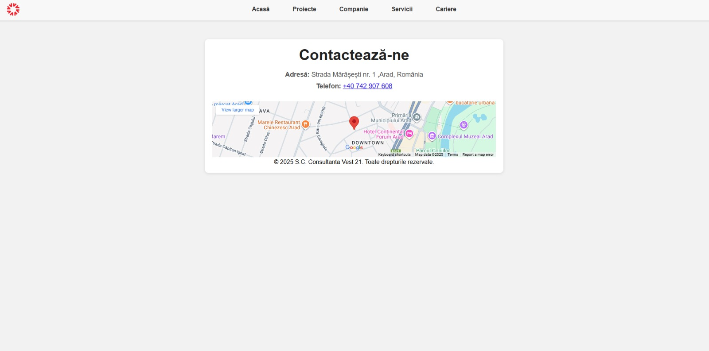
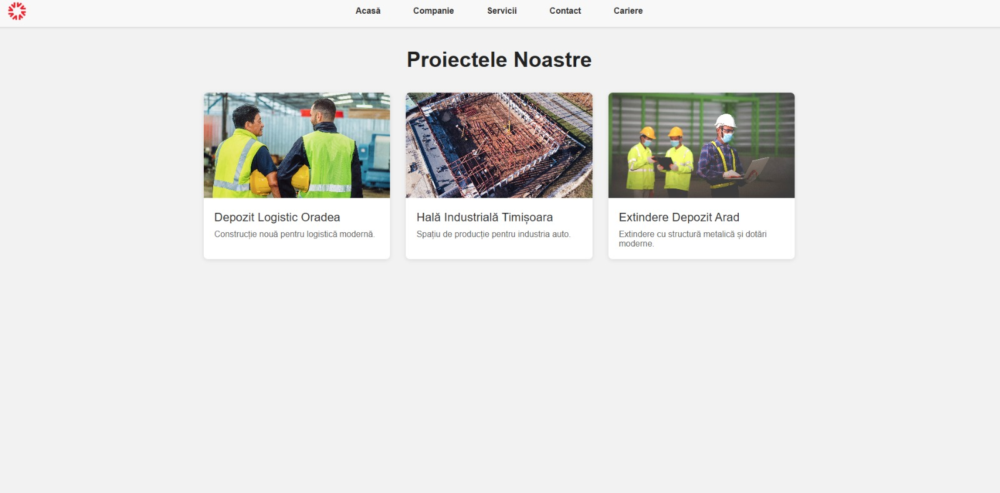
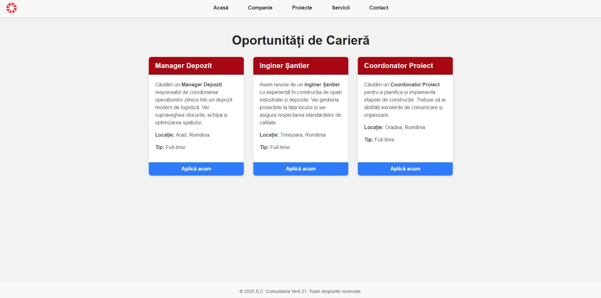

Goal
Present Consvest as a high-trust industrial builder with clear services, strong credibility, and an easy path for prospects to request an offer.
My role
• UI/UX layout & visual direction
• Front-end development (HTML/CSS/JS)
• Responsive + performance polish
Challenges
• Industrial niche needed a premium, “serious” tone.
• Clear structure for services + projects without overload.
• Mobile readability for on-site decision makers.
Solutions
• Minimal Apple-style spacing & hierarchy.
• Trust blocks (project focus + CTA flow).
• Mobile-first layout and fast assets.
Results
• Cleaner brand presence and better professionalism.
• More structured user journey toward contacting.
• Smooth experience on desktop + phone.
Screenshots


